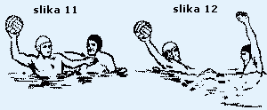
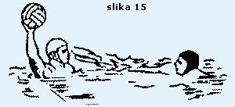
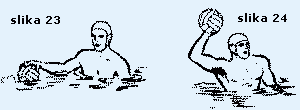

Vaterpolo pravila
Ovo su službena vaterpolo pravila donesena od strane F.I.N.A.-e izdana od Hrvatskog vaterpolo saveza, studeni 2005.
WP 01 Igralište i oprema:
WP 1.1 Organizator snosi punu odgovornost za ispravne mjere i oznake igrališta i mora osigurati svu propisanu opremu i pribor.
WP 1.2 Nacrt i oznake na igralištu, kad utakmicu sude dva suca, moraju biti prema sljedećoj shemi:

WP 1.3 Kada utakmicu sudi jedan sudac mora se kretati na istoj strani gdje je zapisnički stol, a golni suci moraju zauzeti mjesto na suprotnoj strani.
WP 1.4 Razmak između golnih linija ne može biti manji od 20 m, niti veći od 30 m za utakmice koje igraju muškarci. Razmak između golnih linija ne može biti manji od 20 m, niti veći od 25 m za utakmice koje igraju žene. Širina igrališta ne može biti manja od 10 m, niti veća od 20 m. Udaljenost linija igrališta mora biti 0,30 m iza golne linije na svakoj strani.
WP 1.5 Za FINA natjecanja veličina igrališta, dubina i temperatura vode kao i jačina rasvjete moraju biti kako je predviđeno u FR 7.2, FR 7.3, FR 7.4 i FR 8.3.
FR 7.2. Igralište za muškarce: udaljenost između odgovarajućih golnih linija mora biti 30 m. Širina mora biti 20 m. Dubina vode ne smije nigdje biti manja od 1,80 m, a preporuča se 2,00 m.
FR 7.3. Igralište za žene: za utakmice koje igraju žene dimenzije igrališta moraju biti 25 x 17 m. Dubina vode ne smije biti manja od 1,80 m, a preporučljiva je 2,00 m.
FR 7.4. Temperatura vode mora biti 26 +/- 1 °C.
FR 7.5. Rasvjeta ne smije biti manja od 600 luxa.
FR 7.6. Odstupanja od FR 7.2 i 7.3 su dozvoljena odlukom Saveza koji rukovodi takmičenjem.
FR 8.3. Za Olimpijske igre, Svjetska prvenstva i FINA takmičenja rasvjeta ne smije biti manja od 1.500 luxa.
WP 1.6 Vidljive oznake moraju biti postavljene na obje strane igrališta a označavaju sljedeće:
- bijele oznake - golna linija i polovica igrališta
- crvene oznake - linija 2 m
- žute oznake - linija 5 m
Uzdužne granice igrališta od golne linije do linije 2 metra moraju biti označene crveno, od linije 2 metra do linije 5 metara žuto, te od linije 5 metara do centra igrališta zeleno.
WP 1.7 Crvena oznaka mora biti na svakom kraju igrališta, 2 metra od kuta na suprotnoj strani od zapisničkog stola, da označi mjesto za ponovni ulazak igrača u igru.
WP 1.8 Mora se osigurati dovoljno prostora kako bi se sucima omogućilo slobodno kretanje od jednog do drugog kraja igrališta. Potrebno je osigurati prostor i kod golnih linija za golne suce.
WP 1.9 Tajnik mora imati bijelu, plavu i crvenu zastavicu, svaku veličine 0,35 x 0,20 m.na vrh
WP 02 Golovi:
WP 2.1 Dvije vratnice i greda krute konstrukcije, pravokutnog oblika, veličine 0,075 m na strani prema igralištu, obojene bijelo, moraju biti smještene na golnim linijama na krajevima igrališta, jednako udaljene od uzdužnih stranica igrališta najmanje 0,30 m ispred granice igrališta.
WP 2.2 Unutrašnji razmak vratnica mora biti 3,00 m. Kada je dubina vode 1,50 m ili više, donja strana grede mora biti 0,90 m iznad površine vode. Kada je dubina vode manja od 1,50 m, donja strana grede mora biti 2,40 m od dna bazena.
WP 2.3 Mreže moraju biti sigurno pričvršćene za vratnice i gredu i zatvarati cijeli gol ostavljajući razmak iza golnih linija ne manji od 0,30 m. na vrh
WP 03 Lopta:
WP 3.1 Lopta mora biti okrugla sa zračnom komorom koja ima samozatvarajući ventil. Mora biti nepromočiva, bez vanjskih šavova, bez premaza masti ili slične tvari.
WP 3.2 Težina lopte mora biti od 400 do 450 grama.
WP 3.3 Za muški vaterpolo obujam lopte mora biti od 0,68 do 0,71 m, a tlak u lopti od 90 do 97 kPa (13 - 14 psi).
WP 3.4 Za ženski vaterpolo obujam lopte mora biti od 0,65 do 0,67, a pritisak u lopti od 83 do 90 kPa (12 - 13 kPa).na vrh
WP 04 Kapice:
WP 4.1 Kapice moraju biti u kontrastnim bojama, osim potpuno crvene, i moraju se razlikovati od boje lopte. Suci mogu zatražiti od ekipe da stavi bijele ili plave kapice. Golmani moraju nositi crvene kapice.Kapice moraju biti vezane ispod brade. Ako igrač izgubi kapicu za vrijeme igre, mora je zamijeniti kod prvog prikladnog prekida igre kada je njegova ekipa u posjedu lopte. Kapice se moraju nositi tijekom cijele utakmice.
WP 4.2 Kapice moraju imati savitljiv štitnik za uši iste boje kao i kapice s kojima ekipa nastupa, osim golmana koji može imati crvene štitnike.
WP 4.3 Kapice moraju imati brojeve s obje strane, visine 0,10 m. Golman nosi kapicu s brojem 1, a ostale kapice moraju imati brojeve od 2 do 13. Pričuvni golman mora nositi crvenu kapicu broj 13. Niti jedan igrač ne smije promijeniti broj svoje kapice za vrijeme igre, osim s dozvolom suca i najavom tajniku.
WP 4.4 Za međunarodne utakmice kapice moraju na prednjoj strani imati međunarodnu slovnu oznaku zemlje (tri slova) i mogu imati nacionalni stijeg. Visina slovne oznake mora biti 0,04 m.na vrh
WP 05 Ekipe i zamjene:
WP 5.1 Svaka ekipa mora imati 7 igrača, od kojih 1 mora biti golman koji nosi golmansku kapicu, i ne više od 6 pričuvnih igrača koji se mogu zamjenjivati.
Od ekipe koja igra s manje od 7 igrača ne smije se zahtijevati da ima golmana.
WP 5.2 Igrači koji tog trenutka nisu u igri, zajedno s trenerima i službenim osobama,s izuzetkom glavnog trenera, moraju sjediti na klupi i ne smiju je napuštati od početka igre, osim između četvrtina i produžetaka ili tijekom time-outa. Glavnom treneru momčadi u posjedu lopte mora biti dozvoljeno kretanje do linije 5 metara u bilo koje vrijeme. Ekipe smiju promijeniti strane i klupe samo u poluvremenu i prije početka drugog nastavka produžetka. Obje klupe za ekipe moraju se nalaziti na suprotnoj strani od zapisničkog stola.
WP 5.3 U sastavu ekipe uvijek mora biti kapetan, koji je odgovoran za dobro ponašanje i disciplinu svoje ekipe.
WP 5.4 Igrači moraju nositi neprovidne kostime (gaćice) ili kostime (gaćice) s posebnim dodatkom. Prije ulaska u igru moraju odstraniti sve predmete koji mogu prouzročiti ozljede.
WP 5.5 Igrači ne smiju biti namazani po tijelu mašću, uljem ili sličnim sredstvom. Ako sudac prije početka igre utvrdi da je upotrebljeno takvo sredstvo, mora zatražiti da se odmah odstrani. Početak utakmice se ne smije odgoditi da bi se sredstvo odstranilo.Ako se ovaj prekršaj utvrdi poslije početka igre, taj igrač mora biti isključen do kraja utakmice, a zamjena može ući odmah u igru na mjestu za ponovni ulazak kod vlastite golne linije.
WP 5.6 U svako vrijeme tokom igre igrač može biti zamijenjen nakon što je napustio igralište na mjestu za ponovni ulazak čim igrač bude vidljiv na površini vode u prostoru za ponovni ulazak. Ako je golman zamjenjen temeljem ovog članka Pravila, zamjena mora nositi golmansku kapicu. Zamjena se po ovom članku Pravila ne može obaviti od vremena kada je dosuđeno kazneno bacanje do trenutka izvođenja kaznenog bacanja, osim ako je zatržen time-out.
WP 5.7 Zamjena smije ući u igralište s bilo kojeg mjesta:
a) za vrijeme odmora između četvrtina i bilo kojeg nastavka produžetka;
b) nakon postignutog pogotka;
c) za vrijeme time out-a,
d) da bi zamjenio igrača koji krvari ili je ozlijeđen.
WP 5.8 Zamjena mora biti spremna ući u igru bez odugovlačenja. Ako zamjena nije spremna, igra mora biti nastavljena bez njega, a on može ući u svako vrijeme s mjesta za ponovni ulazak kod vlastite golne linije.
WP 5.9 Golman koji je zamjenjen, ako se vrati u igru, može igrati na bilo kojem mjestu.
WP 5.10 Ako se golman mora povući iz igre zbog zdravstvenih razloga, suci moraju dozvoliti da ga odmah zamijeni jedan od igrača, koji će staviti golmansku kapicu.na vrh
WP 06 Službene osobe:
WP 6.1 Za FINA natjecanja službene osobe su: dva suca, dva golna suca, mjeritelji vremena i tajnici, svaki sa sljedećim ovlastima i dužnostima. Navedene službene osobe moraju biti prisutne uvijek kad god je moguće i za ostala natjecanja, osim na utakmicama koje sude dva suca bez golnih sudaca. Tada suci moraju preuzeti njihove dužnosti (bez davanja znakova) kao što stoji u WP 8.2.
[Napomena]: Ovisno o stupnju važnosti utakmice igru može voditi četiri do osam službenih osoba kako slijedi:
(a) Suci i gol suci:
Dva suca i dva golna suca ili dva suca bez golnih sudaca ili jedan sudac i dva golna suca;
(b) Mjeritelji vremena i tajnici:
- S jednim mjeriteljem vremena i jednim tajnikom:
Mjeritelj vremena mora mjeriti vrijeme kontinuiranog posjeda lopte za svaku ekipu kako je opisano WP 20.17. Tajnik mora mjeriti točno vrijeme trajanja stvarne igre, time out-a i odmore između pojedinih četvrtina i produžetaka. Također mora mjeriti vrijeme trajanja isključenja igrača koji su isključeni iz igre prema Pravilima. Mora voditi zapisnik utakmice kao što je navedeno u WP 10.1. - S dva mjeritelja vremena i jednim tajnikom:
Mjeritelj vremena br.1 mora mjeriti točno vrijeme trajanja stvarne igre i odmore između pojedinih četvrtina i produžetaka.
Mjeritelj vremena br. 2 mora mjeriti vrijeme kontinuiranog posjeda lopte za svaku ekipu kako je opisano u WP 20.17.
Tajnik treba voditi zapisnik utakmice i obavljati sve ostale dužnosti prema WP 10.1.
- S dva mjeritelja vremena i dva tajnika:
Mjeritelj vremena br.1 mora mjeriti točno vrijeme trajanja stvarne igre, time out-a i odmore između pojedinih četvrtina i produžetaka.
Mjeritelj vremena br. 2 mora mjeriti vrijeme kontinuiranog posjeda lopte za svaku ekipu kako je opisano u WP 20.17.
Tajnik br. 1 mora voditi zapisnik utakmice prema WP 10.1. (a).
Tajnik br. 2 mora obavljati dužnosti prema WP 10.1 (b),(c) i (d), koje se odnose na nepravilan ponovni ulazak isključenog igrača, nepravilan ulazak zamjene, isključenje igrača i treću osobnu grešku.na vrh
WP 07 Suci:
WP 7.1 Suci moraju imati potpunu kontrolu utkmice. Njihova nadležnost nad igračima mora trajati cijelo vrijeme dok se oni i igrači nalaze na plivalištu. Sve odluke sudaca o praktičnim pitanjima moraju biti konačne i njihova tumačenja Pravila moraju biti obavezna za vrijeme utakmice. Suci ne smiju pretpostavljati stvarne događaje, ali moraju tumačiti ono što uočavaju na način kako najbolje znaju.
WP 7.2 Suci moraju dati znak zviždaljkom za početak i ponovni početak igre, dosuđivati pogotke, golna bacanja, kornerska bacanja (bez obzira jesu li su golni suci dali znak ili ne), neutralna bacanja i prekršaje Pravila igre. Sudac može promijeniti svoju odluku pod uvjetom da to učini prije nego što se lopta vrati u igru.
WP 7.3 Suci moraju propustiti dosuđivanje pojedinog prekršaja ako bi to, po njihovom mišljenju, bila prednost ekipi koja je prekršaj učinila. Suci ne smiju dosuditi običan prekršaj kada još postoji mogućnost igranja loptom.
[Napomena: Suci moraju ovaj princip primjenjivati u punoj mjeri. Na primjer, ne smiju dosuditi prekršaj u korist igrača koji je u posjedu lopte i napreduje prema protivničkom golu, jer se to smatra davanjem prednosti ekipi koja je taj prekršaj učinila.]
WP 7.4 Suci imaju ovlasti svakog igrača isključiti iz igre u skladu s odgovarajućim člankom Pravilai prekinuti utakmicu ako igrač odbije izići iz vode.
WP 7.5 Suci imaju ovlasti udaljiti svakog igrača, zamjenu, službenu osobu ili gledatelja s prostora bazena ako njihovo ponašanje onemogućava propisno i nepristrano izvršavanje sudačkih obaveza.
WP 7.6 Suci imaju ovlasti prekinuti utakmicu u bilo koje vrijeme, ako po njihovom mišljenju ponašanje igrača, gledatelja ili druge okolnosti ne dozvoljavaju da se utakmica propisno privede kraju. Ako je utakmica prekinuta, suci moraju izvijestiti nadležno tijelo o svom postupku.na vrh
WP 08 Golni suci:
WP 8.1 Golni suci moraju zauzeti mjesta na strani zapisničkog stola na golnoj liniji, na granici igrališta.
WP 8.2 Dužnosti golnih sudaca su:
(a) dati znak podizanjem jedne ruke u vertikalni položaj kad su igrači pravilno zauzeli mjesto na golnoj liniji na početku četvrtine;
(b) dati znak podizanjem obje ruke u vertikalni položaj za nepravilan početak ili ponovni početak;
(c) pokazujući rukom u horizontalnom položaju u pravcu napada za golno bacanje;
(d) pokazujući rukom u horizontalnom položaju u pravcu napada za golno bacanje;
(e) dati znak podizanjem i križanjem ruku u vertikalnom položaju za pogodak;
(f) dati znak podizanjem obje ruke u vertikalni položaj za nepravilan ulazak isključenog igrača ili njegove zamjene.
WP 8.3 Svaki golni sudac mora biti opskrbljen dovoljnim brojem lopti i kad lopta kojom se igra napusti igralište, odmah mora drugu loptu dodati golmanu (za golno bacanje) ili najbližem igraču ekipe u napadu (za kornersko bacanje). Isto mora učiniti i po nalogu suca.na vrh
WP 09 Mjeritelji vremena:
WP 9.1 Dužnosti mjeritelja vremena su:
(a) mjeriti točno vrijeme stvarnog trajanja igre, time out-a i odmora između četvrtina i produžetaka;
(b) mjeriti vrijeme kontinuiranog posjeda lopte za svaku ekipu;
(c) mjeriti vrijeme trajanja isključenja igrača u skladu s Pravilima kao i objaviti vrijeme ponovnog ulaska isključenih igrača ili njihovih zamjena;
(d) razgovijetno objaviti početak zadnje minute utakmice i zadnje minute drugog produžetka;
(e) zviždaljkom označiti 45 sekundi i kraj svakog time out-a.
WP 9.2 Mjeritelj vremena mora dati znak zviždaljkom (ili drugim uređajem osobito jakog zvuka koji se odmah prepoznaje) za završetak svake četvrtine ili produžetaka nezavisno od sudaca. Njegov znak odmah prekida igru, osim u slučajevima:
(a) kada sudac istodobno dosudi kazneno bacanje. U tom slučaju kazneno bacanje se mora izvesti prema Pravilima;
(b) kad je lopta u letu prema golu i prelazi golnu liniju. U tom slučaju se mora priznati pogodak.na vrh
WP 10 Tajnici:
WP 10.1 Dužnosti tajnika su:
(a) voditi zapisnik utakmice, što uključuje igrače, rezultat, time out-e, sve prekršaje za isključenje, prekršaje za kaznena bacanja, i osobne greške dosuđene svakom igraču
(b) kontrolirati vrijeme trajanja isključenja igrača i dati znak za istek vremena isključenja dizanjem odgovarajuće zastavice; osim, kad sudac mora dati znak za ponovni ulazak isključenom igraču ili zamjeni kada njegova ekipa ponovno dođe u posjed lopte;
(c) davati znak crvenom zastavicom i zviždaljkom za svaki nepravilni ulazak isključenog igrača ili nepravilan ulazak zamjene (uključujući i znak golnih sudaca za nepravilan ponovni ulazak ili ulazak) koji mora odmah zaustaviti igru;
(d) dati znak, bez odlaganja, za treću osobnu grešku kako slijedi:
(I) crvenom zastavicom ako je treća osobna greška
(II) crvenom zastavicom i zviždaljkom ako je prekršaj za kazneno bacanje treća osobna greška.na vrh
WP 11 Trajanje igre:
WP 11.1 Trajanje igre mora biti 4 četvrtine po 8 minuta stvarne igre.
Vrijeme treba početi mjeriti na početku svake četvrtine ili produžetka u trenutku kad igrač dotakne loptu. Kod svih znakova za prekid mjerni sat mora se zaustaviti dok lopta ne bude vraćena u igru, napuštanjem ruke igrača koji izvodi odgovarajuće bacanje ili kada loptu dotakne igrač nakon neutralnog bacanja.
WP 11.2 Između prve i druge,te treće i četvrte četvrtine utkmice bit će odmor od 2 minute, a između druge i treće četvrtine odmor traje 5 minuta. Ekipe, uključujući igrače, trenere i službene osobe, moraju promijeniti strane prije početka treće četvrtine i odnosno drugog produžetka.
WP 11.3 Ako je nakon isteka vremena utakmica završila neriješeno, a potreban je odlučujući rezultat,mora se igrati produžetak poslije odmora od 5 minuta. Igrat će se 2 produžetka po 3 minute stvarne igre s prekidom od 2 minute kako bi ekipe promijenile strane.Ako je rezultat na kraju dvaju produžetaka neriješen, moraju se izvoditi kaznena bacanja kako bi se dobio pobjednik.
[Napomena: Ako je potrebno izvođenje kaznenih bacanja, poštivat će se sljedeći postupak:
- ako se radi o ekipama koje su upravo završile utakmicu, izvođenje kaznenih bacanja počet će odmah s istim sucima;
- u suprotnom, kaznena bacanja izvodit će se 30 minuta nakon završetka zadnje utakmice tog kola, ili prvom mogućom prigodom. Pri tome treba koristiti suce koji su upravo završili suđenje posljednje utakmice u tom kolu, pod uvjetom da se radi o neutralnim sucima;
- ako se radi o dvije ekipe, njihovi treneri određuju 5 igrača i golmana koji će sudjelovati u izvođenju kaznenih bacanja. Golmana je moguće promjeniti u bilo kojem trenutku, pod uvjetom da je zamjena upisana u službeni zapisnik tijekom utakmice;
- petoro igrača mora biti popisano slijedom kojim će se izvoditi kaznena bacanja. Taj slijed se ne može mijenjati;
- igrači koji su isključeni tijekom utakmice ne mogu izvoditi kaznena bacanja, niti mogu mijenjati golmana;
- ako je tijekom izvođenja kaznenih bacanja isključen golman, jedan od pet igrača određenih za izvođenje kaznenih bacanja, može ga zamijeniti, ali nema povlastice golmana. Nakon što igrač sudjeluje u obrani jednog kaznenog bacanja, moguće ga je zamjeniti drugim igračem ili golmanom;
- kaznena bacanja se izvode naizmjenično, na bilo kojoj strani igrališta i svi igrači, osim izvođača kaznonog bacanja i golmana protivničke ekipe, moraju sjediti na klupi;
- ždrijebom se odlučuje ekipa koja prva počinje sa izvođenjem kaznenih bacanja;
- ako je i nakon prve serije kaznenih bacanja rezultat izjednačen, istih pet igrača naizmjenično će izvoditi po jedno kaznono bacanje, sve dok jedna ekipa postigne, a druga ne postigne pogodak;
- ako u izvođenju kaznenih bacanja sudjeluju tri ekipe, svaka od ekipa će izvoditi 5 kaznenih bacanja protiv ostle dvije ekipe, vodeći kaznena bacanja naizmjence. Ždrijebom će se odrediti ekipa koja prva izvodi kazneno bacanje.]
WP 11.4 Bilo koji mjerni instrument mora pokazivati opadajuće vrijeme, tj. pokazivati vrijeme koje je preostalo do kraja četvrtine ili produžetka.na vrh
WP 12 Time out:
WP 12.1 Svaka ekipa ima pravo na 3 time out-a u svakoj utakmici. Treći time-out može biti zatražen samo u produžecima. Trajanje time-out-a iznosi 1 minutu. Trener ekipe u posjedu lopte može zatražiti time-out u svako vrijeme i nakon pogotka pozivom „time out“ i signalizacijom rukama u obliku slova T. Ako je zatražen time-out, suci i tajnici moraju zviždukom zaustaviti igru, a igrači moraju odmah doplivati u svoju polovicu igrališta.
WP 12.2 Igra mora biti nastavljena nakon zvižduka suca, tako da ekipa koja je u posjedu lopte izvede bacanje s polovice ili iza polovice igrališta, osim ako je time-out zatražen prije izvođenja kaznenog ili kornerskog bacanja - to bacanje mora ostati.
[Napomena: Vrijeme posjeda lopte nastavlja teči od početka igre nakon time out-a.]
WP 12.3 Ako trener ekipe koja je u posjedu lopte zatraži time-out na koji nema pravo, igra mora biti zaustavljena,a ponovno će je početi ekipa koja nije bila u posjedu lopte izvođenjem bacanja sa polovice igrališta.
WP 12.4 Ako je time-out zatražio trener ekipe koja nije u posjedu lopte, igra mora biti zaustavljena, a kazneno bacanje bit će dosuđeno u korist protivnika.
WP 12.5 Kod ponovnog početka, nakon time-out-a, igrači mogu zauzeti bilo koji položaj u igralištu, u skladu s Pravilima koja se odnose na kazneno ili kornersko bacanje.na vrh
WP 13 Početak igre:
WP 13.1 Prije početka igre, a u prisutnosti sudaca, kapetani će bacanjem novčića izabrati strane igrališta.
WP 13.2 Na početku svake četvrtine ili produžetka, igrači moraju zauzeti mjesto na vlastitoj golnoj liniji, međusobno udaljeni oko 1 metar i najmanje 1 metar od vratnica. Niti jedan dio tijela igrača ne smije biti ispred golne linije na vodenoj površini.
WP 13.3 Kada se suci uvjere da su ekipe spremne, sudac mora dati znak zviždukom za početak i odmah osloboditi ili baciti loptu na liniju polovice igrališta.
WP 13.4 Ako oslobođena ili bačena lopta daje očitu prednost jednoj ekipi, sudac mora uzeti loptu i dosuditi neutralno bacanje na liniji polovice igrališta.na vrh
WP 14 Pogodak:
WP 14.1 Pogodak mora biti priznat kad lopta cijelim obujmom prijeđe golnu liniju između vratnica ispod grede.
WP 14.2 Pogodak može biti postignut s bilo kojeg dijela igrališta osim što golmanu nije dozvoljeno da prijeđe ili dodirne loptu preko linije polovice igrališta.
WP 14.3 Pogodak može biti postignut bilo kojim dijelom tijela osim stisnutom šakom. Pogodak se smije postići i uplivavanjem s loptom u gol. Na početku ili ponovnom početku igre najmanje dva igrača (bilo koje ekipe isključujući golmana obrambene ekipe) moraju namjerno igrati ili dodirnuti loptu, osim kod izvođenja:
- kaznenog bacanja;
- slobodnog bacanja koji je izveo igrač u vlastiti gol;
- izravnog udarca iz golnog bacanja, ili
- izravnog udarca iz slobodnog bacanja dosuđenog izvan linije 5 metara.
[Napomena:Pogodak može biti postignut kad igrač odmah uputi udarac izvan linije 5m nakon što je njegovoj ekipi dosuđeno slobodno bacanje izvan 5m. Ako je igrač uveo loptu u igru, pogodak može biti priznat samo ako je loptu namjerno dotaknuo drugi igrač osim golmana obrambene ekipe.
Ako se kod dosuđenog prekršaja lopta nalazi unutar 5 metara ili bliže golu obrambene ekipe, pogodak može biti priznat prema Pravilima ako je lopta bez zadržavanja vraćena na mjesto gdje se prekršaj dogodio, na neko drugo mjesto na liniji prekršaja, ili na bilo koje mjesto iza linije na kojoj se dogodio prekršaj, pod uvjetom da se udarac s te pozicije uputi bez zadržavanja.
Pogodak ne može biti direktno postignut prema ovim Pravilima, nakon:
- time-out-a
- pogotka
- ozljede, uključujući krvarenje
- zamjene kapice
- što je sudac zatražio loptu
- što je lopta napustila igralište
- bilo kojeg zadržavanja.]
WP 14.4 Pogodak mora biti priznat ako je nakon isteka 30 sekundi ili kraja četvrtine ili produžetka lopta bila u zraku i ušla u gol.
[Napomena:U smislu ovog članka Pravila pogodak se mora priznati ako lopta prijeđe golnu liniju nakon odbijanja od vratnica, grede, golmana ili obrambenog igrača i/ili odbijajući se od vode. Ako je označen kraj četvrtine, a nakon toga je loptom, na putanji prema golu igrao ili je namjerno dotaknuo igrač ekipe u napadu, pogodak se ne smije priznati.
Ako je lopta u zraku u putanji prema golu, u smislu ovog članka Pravila, a golman ili drugi obrambeni igrač povuče gol prema dolje ili ako obrambeni igrač, osim golmana, unutar vlastite linije od 5 metara zaustavi loptu s dvije ruke, ili je udari šakom kako bi spriječio postizanje pogotka, sudac mora dosuditi kazneno bacanje, ako bi, po njegovom mišljenju, lopta prešla golnu liniju da nije bilo navedenog prekršaja. Ako je lopta u zraku u putanji prema golu, u smislu ovog člank Pravila, i nakon dodira s vodom otpluta cijela preko golne linije, sudac mora priznati pogodak samo onda ako je plutanje preko golne linije uslijedilo neposredno nakon upućivanja na gol.]na vrh
WP 15 Ponovni početak nakon pogotka:
WP 15.1 Nakon postignutog pogotka igrači moraju zauzeti mjesta bilo gdje na svojoj polovici igrališta. Niti jedan dio tijela igrača na površini vode ne smije prijeći liniju polovice igrališta. Sudac će zviždukom dati znak za ponovni početak igre. Vrijeme stvarne igre će počet teći kad lopta napusti dlan igrača ekipe koja nije postigla pogodak. Ponovni početak igre neizveden u smislu ovog članka Pravila mora biti ponovljen.na vrh
WP 16 Golna bacanja:
WP 16.1 Golno bacanje mora biti dosuđeno:
- kada lopta cijelim obujmom prijeđe golnu liniju, osim dijela između vratnica i ispod grede, ako ju je zadnji dotakao bilo koji igrač osim golmana ekipe koja se brani;
- kad lopta cijelim obujmom prijeđe liniju između vratnica, ispod grede ili dodirne vratnice, gredu ili golmana obrambene ekipe, izravno iz:
- slobodnog bacanja dosuđenog unutar 5 m;
- slobodnog bacanja dosuđenog izvan linije 5 m koji nije izveden u skladu s Pravilima;
- golnog bacanja koje nije odmah izvedeno;
- kornerskog bacanja.
WP 16.2 Golno bacanje mora izvesti bilo koji igrač ekipe s bilo kojeg mjesta unutar prostora 2 m. Ako golno bacanje nije izvedeno prema ovom članku Pravila, mora biti ponovljeno.
[Napomena: Golno bacanje mora izvesti igrač koji je najbliže loptu. Ne smije se odugovlačiti kod izvođenja slobodnog, kornerskog ili golnog bacanja. Bacanje mora biti izvedeno tako da ostali igrači mogu vidjeti kada lopta napusti dlan igrača. Igrači često griješe odugovlačenjem bacanja, jer previde odredbu u WP 19.4 koja dozvoljava igraču da vodi loptu prije dodavanja suigraču. U tom slučaju bacanje se može izvesti odmah i onda kad igrač ne može pronaći suigrača kojem može dodati loptu. Igraču je dozvoljeno da izvede bacanje ili spuštanjem lopte iz ruke na površinu vode (slika 1) ili bacanjem u zrak (slika 2) i tada može nastaviti s vođenjem lopte. U oba slučaja bacanje mora biti izvedeno tako da ga ostali igrači mogu vidjeti.]na vrh
WP 17 Kornerska bacanja:
WP 17.1 Kornersko bacanje mora biti dosuđeno kad lopta cijelim obujmom prijeđe golnu liniju osim dijela između vratnica ispod grede, ako je loptom zadnji igrao golman obrambene ekipe ili ako je igrač obrambene ekipe namjerno izbacio loptu preko linije gola.
WP 17.2 Kornersko bacanje mora izvesti igrač ekipe u napadu sa linije 2 m na strani izlaska lopte. Bacanje ne mora izvesti najbliži igrač, ali mora biti izvedeno bez odugovlačenja.
[Napomena. Za način izvođenja bacanja vidi napomenu u WP 16.2.]
WP 17.3 Kod izvođenja kornerskog bacanja niti jedan igrač ekipe u napadu ne smije biti unutar linije 2 m.
WP 17.4 Kornersko bacanje izvedeno s pogrešnog mjesta ili prije nego što su igrači ekipe u napadu napustili prostor 2 m mora biti ponovljeno.na vrh
WP 18 Neutralna bacanja:
WP 18.1 Neutralno bacanje mora biti dosuđeno:
(a) kad lopta na početku četvrtine ili produžetka, po sučevom mišljenju, padne tako da daje očitu prednost jednoj ekipi;
(b) kad jedan ili više igrača iz svake ekipe učine istodobno prekršaj tako da sucima nije moguće ocijeniti koji je igrač prvi napravio prekršaj;
(c) kad oba suca zazvižde u isti tren, dosuđujući obični prekršaj različitim ekipama;
(d) kada lopta udari ili ostane na nekoj prepreci iznad igrališta.
WP 18.2 Kod neutralnog bacanja sudac mora baciti loptu u igralište na približno istoj poprečnoj poziciji gdje je bio događaj, na način da igrači obje ekipe imaju istu mogućnost doći do lopte. Neutralno bacanje, dosuđeno u prostoru 2 metra, mora biti izvedeno na liniji 2 metra.
WP 18.3 Ako je kod neutralnog bacanja, po mišljenju suca, lopta pala tako da daje očitu prednost jednoj ekipi, sudac će zatražiti loptu i ponoviti bacanje.na vrh
WP 19 Slobodna bacanja:
WP 19.1 Slobodno bacanje mora biti izvedeno na mjestu gdje se prekršaj dogodio, osim:
(a) ako je lopta dalje od gola obrambene ekipe, slobodno bacanje mora biti izvedeno s mjesta na kojem se lopta u tom trenutku nalazi;
(b) ako je prekršaj napravio obrambeni igrač u prostoru od 2 metra, slobodno bacanje mora biti izvedeno na liniji 2 metra suprotno od mjesta gdje je prekršaj napravljen, ili ako je lopta izvan linije 2 m, s mjesta gdje se lopta nalazi;
(c) gdje je Pravilima drugačije određeno.
Slobodno bacanje izvedeno sa pogrešnog mjesta mora biti ponovljeno.
WP 19.2 Sudac će procijeniti trajanje vremena koje je dopušteno igraču za izvođenje slobodnog bacanja. Ono treba biti razumno, bez odugovlačenja, ali ne treba biti u istom trenutku. Ako je igrač u očitoj situaciji da odmah izvede slobodno bacanje, a to ne učini, treba dosuditi prekršaj.
WP 19.3 Svaki član ekipe, u čiju je korist slobodno bacanje dosuđeno, dužan je dodati loptu igraču koji izvodi slobodno bacanje.
WP 19.4 Slobodno bacanje se izvodi tako da igrači mogu vidjeti kada lopta napušta dlan igrača koji ga izvodi. Nakon toga dozvoljeno je držati ili voditi loptu prije dodavanja drugom igraču. Lopta je u igri čim napusti dlan igrača koji izvodi slobodno bacanje.
[Napomena: Za način izvođenja bacanja vidi napomenu WP 16.2]na vrh
WP 20 Obični prekršaji:
WP 20.1 Obični prekršaj je bilo koji od sljedećih prekršaja (WP 20.2 do WP 20.18), za koji mora biti dosuđeno slobodno bacanje za protivničku ekipu.
[Napomena: Suci moraju dosuđivati obične prekršaje u smislu Pravila ne dozvoljavajući ekipi u napadu da dođe do prednosti. Međutim, suci moraju uzeti u obzir posebne okolnosti iz WP 7.3 (prednost).]
WP 20.2 Krenuti s golne linije na početku četvrtine ili produžetka prije znaka suca. Slobodno bacanje mora biti izvedeno s mjesta gdje se nalazi lopta, ili ako sudac nije loptu ubacio u igralište, slobodno bacanje izvodi sa polovice igrališta.
WP 20.3 Pomagati suigraču na početku četvrtine ili produžetka, ili bilo kada za vrijeme utakmice.
WP 20.4 Držati se ili odbiti od vratnica ili od nosača vratnica, držati se ili odbiti od stranica bazena za vrijeme stvarne igre, držati se za granice igrališta osim na početku četvrtine ili produžetka.
WP 20.5 Aktivno sudjelovati u igri stojeći na dnu bazena, hodati u tijeku igre ili se odbijati od dna bazena držeći loptu ili napadajući protivnika. Ovaj članak Pravila ne primjenjuje se za golmana unutar 5 metra.
WP 20.6 Napadnut potopiti ili držati cijelu loptu pod vodom.
[Napomena: Obični je prekršaj, napadnut potopiti ili držati loptu pod vodom čak i kad igraču koji je u posjedu lopte protivnički igrač potisne ruku i potopi zajedno s loptom (slika 3).

Nije bitno što je lopta potopljena protiv volje igrača. Bitno je da je prekršaj dosuđen protiv igrača koji je bio u kontaktu s loptom u trenutku potapanja. Važno je zapamtiti da se prekršaj može dogoditi samo ako je igrač potopio loptu napadnut. Prema tome, kad golman iskoči visoko iz vode da bi obranio udarac i padajući u vodu potopi loptu nije učinio prekršaj. Ali ako nakon toga drži loptu pod vodom napadnut od protivnika, učinio je povredu ovog članka Pravila,a ako je time onemogućio postizanje eventualnog pogotka, mora se dosuditi kazneno bacanje po WP 22.2.]
WP 20.7 Udariti loptu stisnutom šakom. Ovaj članak se neće primijeniti za golmana kada je unutar linije 5 metara.
WP 20.8 Igrati ili dodirnuti loptu objema rukama istodobno. Ovaj članak Pravila se neće primijeniti za golmana kada je unutar linije 5 metara.
WP 20.9 Ometati ili na drugi način ograničavati slobodne pokrete protivnika koji ne drži loptu, uključujući plivanje po ramenima, leđima ili nogama protivnika. ''Držati'' loptu znači podignuti, nositi ili dodirivati loptu, ali ne i voditi loptu.

[Napomena: Prvo što sudac mora uzeti u obzir je drži li protivnik loptu, jer ako on to radi, igrač koji ga ometa ne može biti kažnjen. Jasno je da igrač drži loptu ako je drži iznad vode (slika 4). Igrač također drži loptu, ako pliva držeći je u ruci ili je u dodiru s loptom dok je ona na površini vode (slika 5). Plivanje s loptom (vođenje lopte), kao što je prikazano na slici 6 ne smatra se držanjem lopte. Česti oblik ometanja je kada igrač pliva preko protivnikovih nogu (slika 7), što ga usporava i sprječava rad nogu. Drugi oblik je plivanje po protivnikovim ramenima. Treba imati u vidu da prekršaj ometanja može učiniti i igrač koji posjeduje loptu. Na primjer slika 8 pokazuje igrača koji jednu ruku drži na lopti, a drugom pokušava odgurnuti protivnika, da dobije više prostora za sebe. Slika 9 pokazuje igrača u posjedu lopte koji ometa svog protivnika gurajući ga natrag glavom. Treba voditi računa o slikama 8 i 9 jer bilo koji pokret igrača u posjedu lopte može biti udarac ili čak grubost. Slike prikazuju ometanje bez grubih pokreta. Igrač može također učiniti prekršaj ometanja i bez posjeda lopte ili dodirivanja. Slika 10 pokazuje igrača koji namjerno blokira protivnika svojim tijelom i raširenim rukama onemogućuje pristup lopti. Ovaj prekršaj se najčešće događa u blizini granica igrališta.]
WP 20.10 Gurnuti ili odgurnuti se od protivnika koji ne drži loptu.
[Napomena: Guranje se može dogoditi na različite načine, rukom (slika 11) ili nogom (slika 12). U prikazanim slučajevima kazna je slobodno bacanje za obični prekršaj. Međutim, suci moraju razlikovati guranje nogom od udarca nogom koji postaje prekršaj za isključenje ili čak grubost. Ako je noga bila već u kontaktu s protivnikom u početku pokreta, onda je to najčešće guranje, ali ako je „pokret“ počeo prije takvog kontakta s protivnikom, onda se može smatrati kao udarac.]

WP 20.11 Za igrača ekipe u posjedu lopte, kad učini prekršaj po WP 20.9 (ometanje protivnika) ili WP 20.10 (gurnuti ili odgurnuti se od protivnika) prije izvedenog slobodnog, golnog ili kornerskog bacanja.
WP 20.12 Nalaziti se u prostoru 2 metra od protivničke golne linije, osim kada se igrač nalazi iza linije lopte. Ne smije se smatrati prekršajem ako igrač drži loptu unutar 2 metra i doda loptu suigraču koji je iza linije lopte, a ovaj odmah uputi udarac na gol, prije nego što je dodavač napustio prostor od 2 metra.
[Napomena: Ako suigrač ne uputi udarac na gol, dodavač lopte mora odmah napustiti prostor 2 metra da bi izbjegao kaznu po ovom članku Pravila.]
WP 20.13 Izvesti kazneno bacanje drugačije od propisanog bacanja.
[Napomena: Vidi WP 23.4 za način izvođenja kaznenog bacanja.]
WP 20.14 Pretjerano zadržavati izvođenje slobodnog, golnog ili kornerskog bacanja.
[Napomena: Vidi napomenu za WP 16.2]
WP 20.15 Kada golman prijeđe ili dodirne loptu izvan vlastite polovice igrališta.
WP 20.16 Uputiti loptu izvan granica igrališta, uključujući i odbijanje lopte od zidova iznad površine vode.
WP 20.17 Ako ekipa drži loptu duže od 30 sekundi stvarne igre i ne uputi udarac na protivnički gol. Mjeritelj vremena koji mjeri vrijeme posjeda lopte poništiti će vrijeme:
(a) kad lopta napusti ruku igrača koji upućuje udarac na gol. Ako se lopta odbije u igru od vratnice, grede ili golmana, vrijeme posjeda lopte ne smije se mjeriti dok lopta ne dođe u posjed jedne od ekipa;
(b) kad lopta dođe u posjed protivničke ekipe. ''Posjedovati'' ne znači dodirnuti loptu u letu prema protivničkom igraču;
(c) kad se loptom počne igrati nakon dosuđenog prekršaja za isključenje, prekršaja za kazneno bacanje, golnog, kornerskog ili neutralnog bacanja.
Vidljivi mjerni sat mora pokazivati opadajuće vrijeme (to jest, pokazivati koliko je vremena preostalo).
[Napomena: Mjeritelj vremena i suci će odlučiti je li upućen udarac na gol ili ne, ali suci moraju donijeti konačnu odluku.]
WP 20.18 Odugovlačiti igru.
[Napomena: Sucu je uvijek dozvoljeno dosuditi obični prekršaj po ovom članku Pravila i prije nego što istekne 30 sekundi posjeda lopte.
Ako golman, kao jedini igrač svoje ekipe u svojoj polovici igrališta dobije loptu od svojeg suigrača koji je u drugoj polovici igrališta, mora biti dosuđeno odugovlačenje igre.
U posljednjoj minuti susreta suci moraju biti sigurni da postoji namjera odugovlačenja igre prije nego što primjene ovaj članak Pravila.]na vrh
WP 21 Prekršaji za isključenje:
WP 21.1 Prekršaji za isključenje moraju se primijeniti za sljedeće prekršaje (WP 21.4 do WP 21.16) koji moraju biti kažnjeni (ukoliko drugačije ovim Pravilima nije predviđeno) dosuđivanjem slobodnog bacanja za protivničku ekipu i isključenjem igrača koji je učinio prekršaj.
WP 21.2 Isključeni igrač se mora kretati prema prostoru za ponovni ulazak najkraćim putem prema vlastitoj golnoj liniji bez napuštanja vode. Isključeni igrač koji iziđe iz vode (prije nego što je njegova zamjena ušla) smatrat će se krivim za prekršaj prema WP 21.10 (nepoštivanje).
[Napomena: Isključeni igrač (uključujući bilo kojeg igrača koji je isključen prema ovim Pravilima za ostatak igre) mora ostati u vodi i krenuti (što uključuje i plivanje ispod površine vode) prema prostoru za ponovni ulazak na vlastitoj golnoj liniji, bez utjecaja na igru. Igrač smije isplivati iz igrališta na bilo kojem mjestu golne linije i može plivati iza gola do prostora za ponovni ulazak, vodeći računa da ne pomiče granicu igrališta.
Kada dođe u prostor za ponovni ulazak isključeni igrač mora biti vidljiv iznad razine vode, prije nego što igrač (ili zamjena) moraju dobiti dozvolu za ponovni ulazak u skladu s Pravilima. Međutim, nije potrebno da isključeni igrač ostane u prostoru za ponovni ulazak i čeka dolazak zamjene.]
WP 21.3 Isključenom igraču ili njegovoj zamjeni mora biti dozvoljen ponovni ulazak u igru nakon što bude ispunjen jedan od uvjeta:
(a) nakon isteka vremena od 20 sekundi stvarne igre, tajnik će podići odgovarajuću zastavicu, pod uvjetom da je isključeni igrač došao u prostor za ponovni ulazak u skladu sa Pravilima;
(b) nakon što je postignut pogodak;
(c) kad ekipa isključenog igrača dobije slobodno ili golno bacanje,znak suca je ujedno znak za ulazak isključenom igraču, pod uvjetom da je došao u prostor za ponovni ulazak u skladu s Pravilima.
Isključenom igraču ili zamjeni biti će dozvoljen ponovni ulazak iz prostora za ponovni ulazak bliže njegovoj golnoj liniji pod uvjetom:
(a) da je dobio znak od tajnika ili suca;
(b) da ne skoči ili se odgurne od strane ili zida bazena ili granice igrališta;
(c) da ne dodiruje granicu igrališta;
(d) zamjeni neće biti dozvoljeno ući umjesto isključenog igrača sve dok isključeni igrač ne dođe u prostor za ponovni ulazak bliži njegovoj golnoj liniji.
Nakon što je pogodak postignut, isključeni igrač ili zamjena mora ponovo ući u igralište sa bilo kojeg mjesta.
Ove odredbe moraju biti primjenjene i za ulazak zamjene, kad je isključeni igrač dobio treću osobnu grešku ili je na drugi način bio isključen za preostali dio utakmice u skladu s ovim Pravilima.
[Napomena: Suci ne smiju dati znak za ulazak zamjeni, niti tajnik smije označiti kraj 20 sekundi vremena isključenja, sve dok isključeni igrač nije doplivao do prostora za ponovni ulazak bliže njegovoj golnoj liniji. Isto se mora primijeniti i za ulazak zamjene umjesto igrača isključenog do kraja utakmice. U slučaju da se isključeni igrač propusti vratiti u prostor za ponovni ulazak, zamjeni ne smije biti dozvoljen ulazak sve dok nije postignut pogodak ili do kraja četvrtine ili produžetka.
Defanzivni sudac prvenstveno je odgovoran za davanje znaka za ponovni ulazak isključenom igraču ili zamjeni. Međutim, ofenzivni sudac smije također pomoći u tom slučaju i znak oba suca biti će valjan. Ako sudac sumnja u nepravilan ulazak ili golni sudac označava takav nepravilan ulazak, treba se prvo uvjeriti da drugi sudac nije označio ponovni ulazak.
Prije davanja znaka za ponovni ulazak isključenom igraču ili zamjeni, defanzivni sudac će pričekati trenutak za slučaj da ofenzivni sudac ne dosudi ponovno vraćanje lopte protivničkoj ekipi.
Kraj četvrtine ili produžetka ne znači i promjenu posjeda lopte,ali isključenom igraču ili zamjeni mora biti omogućen ponovni povratak u igru ukoliko njegova ekipa osvoji loptu plivajući na početku nove četvrtine ili produžetka. Ako je igrač isključen kad je označen kraj četvrtine, suci i tajnici moraju obratiti pažnju na ispravan broj igrača prije označavanja ponovnog početka.]
WP 21.4 Za igrača koji napušta vodu, sjedi ili stoji na stepenicama ili stranama bazena za vrijeme igre, osim u slučaju nezgode, ozljede ili bolesti ili s dozvolom suca.
WP 21.5 Ometati izvođenje slobodnog, golnog ili kornerskog bacanja uključujući:
(a) namjerno udaljavanje lopte ili zadržavanje lopte čime se onemogućuje normalan razvoj igre;
(b) svaki pokušaj igranja loptom prije nego što napusti ruku igrača koji izvodi bacanje.

[Napomena: Igrač ne treba biti kažnjen prema ovom članku Pravila ako nije čuo zvižduk, jer je bio ispod vode. Suci moraju odlučiti je li taj čin igrača bio namjeran.
Ometanje kod slobodnog bacanja može biti posredno kad se loptom igra, udaljuje ili se sprječava igraču koji izvodi bacanje da dođe do lopte, ili se može dogoditi da se izvođenje slobodnog bacanja ometa protivnikovim zatvaranjem smjera bacanja (slika 13) ili ometanjem pokreta igrača koji izvodi slobodno bacanje (slika 14). Za ometanje izvođenja kaznenog bacanja također vidi WP 21.16]
WP 21.6 Namjera igranja ili blokiranje udarca s dvije ruke izvan linije 5 metara.
[Napomena: Ako obrambeni igrač, koji je izvan prostora 5 metara, podigne dvije ruke u namjeri da igra ili blokira udarac na gol, mora biti isključen.]
WP 21.7 Namjerno prskati vodu protivniku u lice.

[Napomena: Prskanje se često koristi kao nesportska taktika, ali ona se često kažnjava samo u očitim situacijama, kad su igrači okrenuti licem u lice (Slika 15). Međutim, može se dogoditi, manje uočljivo, kad igrač čini vodenu zavjesu svojim rukama, tobože bez namjere, u pokušaju da onemogući pogled protivniku koji želi uputiti udarac na gol ili dodati loptu. Kazna za namjerno prskanje protivnika je isključenje prema WP 21.7 ili kazneno bacanje prema WP 22.2 ako je protivnički igrač unutar linije 5 metara i pokušava uputiti udarac na gol. Da bi se dosudilo kazneno bacanje ili isključenje odlučujući su jedino položaj i akcija igrača koji napada. Nije odlučujuće je li igrač koji je napravio prekršaj unutar ili izvan prostora od 5 metara.]
WP 21.8 Držati, potopiti ili povući protivnika koji ne drži loptu. DRŽANJE je podizanje, nošenje ili dodirivanje lopte, ali ne uključuje vođenje lopte.

[Napomena: Ispravna primjena ovog Pravila je od izuzetne važnosti kako za prikaz igre, tako i za postizanje pravednog rezultata. Tekst Pravila je jasan i izričit i može biti tumačen samo na jedan način: držati (slika 16), potopiti (slika 17) ili povući (slika 18) protivnika koji ne drži loptu je prekršaj za isključenje. Bitno je da suci ovaj članak ispravno primjenjuju bez osobnog tumačenja kako bi se osiguralo da se ne prekorače granice oštre igre. Suci moraju imati na umu, da povreda WP 21.7 unutar granice 5 metara koja sprječava mogućnost vjerojatnog postizanja pogotka, mora biti kažnjena dosuđivanjem kaznenog bacanja.]
WP 21.9 Udariti nogom ili udariti protivnika namjerno ili činiti naglašene pokrete s tom namjerom.

[Napomena: Prekršaj udaranja nogom ili udaranja protivnika može biti počinjen na različite načine, uključujući da ga je počinio igrač koji je u posjedu lopte ili protivnički igrač; posjedovanje lopte nije odlučujući činilac. Važna je akcija prekršitelja koja uključuje njegove naglašene pokrete u namjeri da udari nogom ili udari protivnika, čak ako do kontakta nije došlo.
Jedan od ozbiljnih udaraca je udarac laktom unazad (slika 19) koji može prouzročiti ozbiljnu ozljedu protivnika. Također, ozbiljne ozljede mogu se dogoditi kad igrač namjerno, pokretom glave unazad udari u lice protivnika koji ga pokriva.U takvim slučajevima sudac bi ispravnije postupio primjenom WP 21.10 (brutalnost), nego primjenom WP 21.9]
WP 21.10 Nesportski se ponašati, uključujući upotrebu nepristojnih riječi, nasilno i ustrajno nepravilno igrati, otkazati poslušnost ili pokazati nepoštivanje sudaca ili službene osobe, kao i ponašanje protivno duhu ovih Pravila, uz veliku vjerojatnost obezvrijeđivanja utakmice, smatraju se prekršajima zbog kojih igrač mora biti isključen do kraja igre, a zamjena ulazi u igru nakon što se ispuni jedan od uvjeta navedenih u WP 21.3.
[Napomena: Ako član ekipe učini prekršaj naveden u ovim Pravilima tijekom odmora između četvrtine ili produžetaka, tijekom time-outa ili prije ponovnog početka igre nakon što je njegova ekipa postigla, igrač mora biti isključen do kraja igre, a zamjena može ući kad istekne odmor, kad ekipa isključenog igrača ponovno dođe u posjed lopte(to znači da kontrolira loptu) ili u drugim situacijama navedenim u WP 21.3.]
WP 21.11 Učiniti grubi nasrtaj (uključujući udaranje nogom i udaranje ili pokušaj udaranja nogom ili udaranja sa zlom namjerom) na protivničkog igrača ili na službenu osobu, bilo za vrijeme igre, time-out-a ili prije ponovnog prekida između četvrtina i produžetaka. Prekršitelj mora biti isključen do kraja utakmice, a kazneni udarac mora biti dosuđen za protivničku ekipu. Isključeni igrač može biti zamjenjen nakon isteka 4 minute stvarne igre.
[Napomena: Ovo se Pravilo mora primijeniti ako se grubost dogodi za vrijeme odmora između četvrtina ili produžetaka, i tada treba dosuditi kazneno bacanje. Ove se odredbe, međutim, ne primjenjuju prije stvarnog početka utakmice.
U slučaju da grubost, u bilo koje vrijeme, počini pričuvni igrač koji se ne nalazi u vodi za vrijeme igre, prekršitelj mora biti isključen za ostatak utakmice. Kapetan ekipe mora odrediti igrača, po osobnom izboru, koji će napustiti vodu, a ekipa će nastaviti s igračem manje 4 minute. Igrač koji je izašao iz vode, može naknadno biti korišten za vrijeme ostatka igre kao jedan od igrača u vodi i neće mu biti dosuđena osobna greška, bez obzira što je bio povučen iz vode.]
WP 21.12 Za igrača ekipe koja nije u posjedu lopte, počiniti bilo koji od sljedećih prekršaja prije nego što je izvedeno slobodno, golno, kornersko ili kazneno bacanje, ili za igrača bilo koje ekipe počiniti bilo koji od tih prekršaja prije nego što je izvedeno neutralno bacanje:
WP 20.9 - Ometati protivnika;
WP 20.10 - Gurnuti ili odgurnuti se od protivnika;
WP 21.4 do WP 21.11 - Počiniti prekršaj za isključenje.
Oba igrača moraju biti isključena, lopta ostaje u posjedu ekipe koja napada. Igrači moraju biti isključeni za ostatak igre kako je to predviđeno Pravilima.
WP 21.13 U slučaju istovremeno počinjenih sljedećih prekršaja igrača bilo koje ekipe prije izvođenja slobodnog, golonog, kornerskog, kaznenog ili neutralnog bacanja:
WP 20.9 - ometati protivnika
WP 20.10 - gurati ili odgurnuti se od protivnika
WP 21.4 do WP 21.11 - počiniti prekršaj za isključenje
Oba igrača moraju biti isključena i mora biti dosuđeno neutralno bacanje.
U slučaju da su prekršaji počinjeni istovremeno, u trenutku izvođenja kaznenog bacanja, kazneno bacanje mora se izvesti. Igrači moraju biti isključeni za ostatak igre kako je to predviđeno Pravilima.
[Napomena: Oba isključena igrača prema ovim Pravilima mogu ući u igru najranije prema članku WP 21.3. ili kod sljedeće promjene posjeda lopte. Ako su dva igrača koja su bila isključena prema ovom članku Pravila stekli uvjete za ponovni ulazak u igru, prije dolaska do prostora za ponovni ulazak, defanzivni sudac može mahanjem ruke svakom igraču dati dozvolu za ponovni ulazak kad dođu u prostoru za ponovni ulazak. Sudac ne mora čekati da oba igrača budu spremna za ponovni ulazak.
Ekipa u posjedu lopte kod istodobnog obostranog prekršaja nastavit će igru slobodnim, golonim, kornerskim ili kaznenim bacanjem. U slučaju neutralnog bacanja će nastaviti utakmicu temeljem članka WP 18.]
WP 21.14 Za igrača ekipe koja je u posjedu lopte, počiniti prekršaj pod WP 21.4 do WP 21.11 (prekršaji za isključenje), prije izvođenja slobodnog, golonog, kornerskog ili kaznenog bacanja, osim što će:
(a) igrač biti isključen za ostatak utakmice gdje Pravila to predviđaju;
(b) kad je prekršaj počinjen za vrijeme izvođenja kaznenog bacanja, kazneno bacanje mora biti izvedeno.
WP 21.15 Za isključenog igrača koji ponovo uđe ili njegovu zamjenu za nepravilan ulazak u igru, uključujući:
(a) bez pokazanog znaka suca ili tajnika;
(b) s bilo kojeg drugog mjesta osim iz njegovog prostora za ponovni ulazak, osim kad Pravila predviđaju trenutnu zamjenu;
(c) skakanjem ili odguravanjem od strane ili zida bazena ili igrališta;
(d) podizanjem granice igrališta.
Ako ovaj prekršaj napravi igrač ekipe koja nije u posjedu lopte, on mora biti isključen, te se istodobno dosuđuje kazneni udarac za protivničku ekipu.
WP 21.16. Ometati izvođenje kaznenog bacanja. Prekršitelj će biti isključen do kraja utakmice, a zamjena ulazi nakon što se ispuni jedan od događaja opisanih u WP 21.3. Kazneno bacanje mora biti izvedeno ili ponovljeno.
[Napomena: Najčešći način ometanja kaznenog bacanja je udariti nogom igrača koji izvodi bacanje baš u trenutku izvođenja. Bitno je da suci osiguraju da su svi igrači najmanje 2 metra od izvođača, kako bi se izbjeglo ometanje na mjestu izvođenja. Sudac će dozvoliti prvo igračima obrambene ekipe pravo zauzimanja položaja.]
WP 21.17 Za golmana obrambene ekipe koji nije zauzeo pravilan položaj na golnoj liniji u trenutku izvođenja kaznenog bacanja, nakon što ga je sudac jednom upozorio da to učini. Drugi obrambeni igrač može zauzeti položaj golmana, ali bez povlastica i ograničenja.
WP 21.18 Kada je igrač isključen, vrijeme isključenja mora započeti odmah nakon što je lopta napustila ruku igrača koji izvodi slobodno bacanje ili kada se lopta dotakne kod neutralnog bacanja.
WP 21.19 Ako isključeni igrač namjerno ometa igru, uključujući podizanje granice igrališta, kazneno bacanje mora biti dosuđeno protivničkoj ekipi i dodatna osobna greška će biti dosuđena isključenom igraču. Ako isključeni igrač ne napusti igralište odmah, sudac to može smatrati namjernim ometanjem prema ovom članku Pravila.
WP 21.20 U slučaju produžetka, vrijeme isključenja bilo kojeg isključenog igrača mora biti nastavljeno i u produžetku. Osobne greške dosuđene za vrijeme igre moraju se prenijeti na produžetke i bilo koji isključeni igrač, prema ovim Pravilima, za ostatak utakmice ne smije sudjelovati u produžecima.na vrh
WP 22 Prekršaji za kazneno bacanje:
WP 22.1 Počiniti bilo koji od sljedećih prekršaja (WP 22.2 to WP 22.9), koji se mora kazniti dosuđivanjem kaznenog bacanja protivničkoj ekipi.
WP 22.2 Za obrambenog igrača učiniti bilo kakav prekršaj unutar 5 metara, koji bi spriječio postizanje pogotka.
[Napomena: Uz ostale prekršaje koji spriječavaju vjerojatan pogodak je i prekršaj u okvirima ovog članka:
(a) za golmana ili bilo kojeg drugog obrambenog igrača koji povuče prema dolje ili na drugi način pomakne gol (slika 20);

(b) za obrambenog igrača igrati, pokazati namjeru igranja ili blokirati udarac na gol s dvije ruke (slika 21);

(c) za obrambenog igrača koji pokazuje namjeru ili blokira dodavanje s dvije ruke;
(d) za obrambenog igrača koji loptom igra stisnutom šakom (slika 22.);
(e)za golmana ili drugog obrambenog igrača potopiti loptu kada je napadnut.
Važno je primjetiti, da se gore opisani prekršaj i drugi prekršaji kao što su držanje, povlačenje, ometanje itd., koji se kažnjavaju slobodnim bacanjem (i isključenjem ovisno o situaciji), postaju prekršaji za kazneno bacanje, ako su počinjeni unutar prostora 5 metara, od strane obrambenog igrača, te ukoliko spriječavaju postizanje pogotka.]
WP 22.3 Za obrambenog igrača, unutar prostora 5 metara udariti nogom ili udariti protivnika ili počiniti bilo koji čin grubosti. U slučaju grubosti prekršitelj također mora biti isključen za ostatak utakmice, ba zamjena ulazi nakon što prođu 4 minute stvarne igre, uz dosuđivanje kaznenog bacanja.
WP 22.4 Za isključenog igrača namjerno ometati igru uključujući i podizanje granica igrališta.
WP 22.5 Za golmana ili bilo kojeg obrambenog igrača koji prevrne gol u svrhu sprječavanja vjerojatnog pogotka.
Prekršitelj mora biti isključen do kraja utakmice, a zamjena ulazi u igru, nakon što se ispuni jedan od događaja opisanih u WP 21.3.
WP 22.6 Ulazak u igralište igrača ili zamjene koji prema Pravilima nemaju pravo sudjelovati u igri u to vrijeme. Prekršitelj mora biti isključen do kraja utakmice s pravom zamjne, a zamjena može ući u igru nakon što se ispuni jedan od događaja opisanih u WP 21.3.
WP 22.7 Za trenera ekipe koja nije u posjedu lopte, zatražiti time-out ili za službenu osobu počiniti bilo kakav potez kako bi spriječio eventualno postizanje pogodka; osobna greška zbog ovakvih prekršaja neće biti zapisana.
WP 22.8 Ako je tijekom posljednje minute utakmice dosuđeno kazneno bacanje, trener može umjesto kaznenog bacanja izabrati posjed lopte izvođenjem slobodnog bacanja. Mjeritalj vremena će u tom slučaju za ekipu koja je u posjedu lopte mjeriti novo vrijeme.
[Napomena: Trener ima odgovornost dati jasan znak, želi li da ekipa zadrži posjed lopte prema ovom Pravilu.]na vrh
WP 23 Kaznena bacanja:
WP 23.1 Kazneno bacanje će izvesti bilo koji igrač ekipe za koju je dosuđeno, osim golmana, s bilo kojeg mjesta na protivničkoj liniji 5 metara.
WP 23.2 Svi igrači moraju napustiti prostor 5 metara i moraju biti najmanje 2 metra udaljeni od igrača koji izvodi bacanje. Sa obje strane igrača koji izvodi bacanje, igrač obrambene ekipe ima pravo prvi zauzeti položaj. Golman obrambene ekipe mora zauzeti položaj između vratnica tako da niti jedan dio njegovog tijela na površini vode nije ispred golne linije. Ako je golman izvan igre, drugi igrač može zauzeti položaj golmana, ali bez njegovih povlastica i ograničenja.
WP 23.3 Kada se sudac, koji kontrolira izvođenje bacanja, uvjeren da su igrači u ispravnom položaju, dat će znak za izvođenje kaznenog bacanja zviždaljkom i istodobnim spuštanjem ruke iz vertikalnog u horizontalni položaj.
[Napomena: Spuštanje ruke istodobno sa zviždaljkom omogućava u svim uvjetima, čak i uz veliku buku gledatelja, izvođenje bacanja u skladu s Pravilima. Kada je ruka podignuta, igrač koji izvodi bacanje će se koncentrirati, jer zna da će zvižduk odmah uslijediti.]
WP 23.4 Igrač koji izvodi kazneno bacanje mora držati loptu i odmah uputiti udarac u neprekinutom pokretu direktno prema golu. Igrač može izvesti bacanje podizanjem lopte iz vode (slika 23), ili držanjem u podignutoj ruci (slika 24) i smije izvoditi na način da je leđima okrenut golu, u pripremi bacanja, pod uvjetom da pokret ne smije biti prekinut prije nego što lopta napusti ruku.
[Napomena: Ne postoji ništa u Pravilima što bi spriječilo da izvede bacanje leđima okrenut golu dok puca ''poluvijak'' ili ''šraubu''.]
WP 23.5 Ako se lopta odbije od vratnice, grede ili golmana, ona ostaje u igri i nije potrebno da loptom igra ili je dotakne drugi igrač prije postizanja pogotka.

WP 23.6 Ako istodobno kad sudac dosudi kazneno bacanje, mjeritelj vremena označi signalom kraj četvrtine ili produžetka, svi igrači, osim igrača koji izvodi kazneno bacanje i golmana obrambene ekipe moraju napustiti vodu prije izvođenja kaznenog bacanja.
U ovoj prilici, ako se lopta odbije u igralište od vratnice, grede ili golmana, ostaje ''mrtva''.na vrh
WP 24 Osobne greške:
WP 24.1 Osobna pogreška će biti upisana onom igraču koji počini prekršaj za isključenje ili prekršaj za kazneno bacanje. Sudac mora pokazati tajniku broj kapice prekršitelja.
WP 24.2 Nakon što je dobio treću osobnu grešku, igrač će biti isključen iz igre do kraja utakmice, a zamjena ulazi nakon što se ispuni jedan od događaja opisanih u WP 21.3.
Ako je treća osobna greška bila prekršaj za kazneno bacanje ulazak zamjene mora uslijediti odmah.na vrh
WP 25 Nezgoda, ozljeda i bolest:
WP 25.1 Igraču će biti dozvoljeno napustiti vodu, sjediti ili stajati na stepenicama ili stranama bazena za vrijeme igre, samo u slučaju nezgode, ozljede ili bolesti, ili sa dozvolom suca.
Igrač koji je opravdano napustio vodu, može ponovo ući iz prostora za ponovni ulazak bliže vlastitoj golnoj liniji, kod odgovarajućeg prekida s dozvolom suca.
WP 25.2 Ukoliko igrač krvari, sudac će mu odmah narediti da napusti vodu i dozvoliti zamjeni da uđe bez prekida igre. Nakon što je krvarenje zaustavljeno, igraču će biti dozvoljen povratak u igru.
WP 25.3 Ako se dogodi nezgoda, ozljeda ili bolest, osim krvarenja, sudac može po svojoj ocjeni prekinuti igru ne duže od 3 minute. U tom slučaju on mora dati znak mjeritelju vremena kada je prekid počeo.
WP 25.4 Ako je igra zaustavljena zbog nezgode, ozljede, krvarenja ili drugog nepoznatog razloga, ekipa koja je bila u posjedu lopte u vrijeme prekida, nastvit će igru s mjesta gdje je igra bila zaustavljena.
WP 25.5 Osim u uvjetima WP 25.2 (krvarenje) igraču ne treba biti dozvoljeno sudjelovanje u daljnjem tijeku igre, ukoliko je zamjena ušla.na vrh
Dodaci:
Dodatak A: Uputstvo za dva suca:
1. Suci imaju apsolutnu kontrolu igre i moraju imati jednako pravo da odlučuju o prekršajima i kaznama. Razlike u mišljenjima ne mogu biti osnova za protest ili žalbu.
2. Organizacija koja određuje suce mora odrediti i stranu bazena za svakog suca. Suci moraju promijeniti stranu bazena prije početka svake četvrtine ili produžetka kad ekipe ne mijenjaju strane.
3. Znak za početak igre,te svake četvrtine i produžetka daje sudac koji se nalazi na strani službenog stola.
4. Nakon postignutog pogotka, znak za ponovni početak mora dati sudac koji je kontrolirao napad, kad je pogodak postignut.
5. Svaki sudac mora odlučivati o prekršajima u bilo kojem dijelu igrališta, ali svaki sudac mora prije svega voditi računa o ofenzivnoj situaciji kod napada na gol s njegove desne strane. Sudac koji ne kontrolira napad (defanzivni sudac), mora zauzeti položaj prateći zadnjeg igrača ekipe koja napada.
6. Kod dosuđivanja slobodnog, golnog ili kornerskog bacanja, sudac koji je donio odluku će zazviždati i obojica sudaca će pokazati smjer napada, kako bi omogućili igračima na različitim stranama igrališta da brzo uoče kojoj je ekipi dosuđeno bacanje.
Ukoliko je potrebno izbjeći dvojbu, sudac koji je donio odluku označit će mjesto odakle se bacanje treba izvesti. Suci moraju upotrebljavati znakove opisane u dodatku B kako bi označili prirodu prekršaja koji su dosudili.
7. Znak za kazneno bacanje dat će sudac koji prati napad, osim kad igrač koji izvodi bacanje lijevom rukom zatraži od defanzivnog suca da mu dade znak.
8. Ako su istodobno slobodna bacanja dosuđena od obojice sudaca istoj ekipi, bacanje mora izvesti igrač kojemu je dosuđeno od strane suca koji prati napad.
9. Kad se istodobno dosude slobodna bacanja za različite ekipe, mora biti dosuđeno neutralno bacanje koje dodjeljuje sudac koji prati napad.
10. Kad jedan sudac dosudi prekršaj za isključenje, a u isto vrijeme drugi sudac dosudi kazneno bacanje ali za protivničku ekipu, oba prekršitelja moraju biti isključena i mora se dosuditi neutralno bacanje.
11. Kad istodobno obojica sudaca dosude, jedan slobodno bacanje, a drugi prekršaj za isključenje ili prekršaj za kazneno bacanje, mora se primijeniti prekršaj za isključenje ili kazneno bacanje.
12. Kad istodobno igrači obje ekipe počine prekršaj za isključenje, bilo za vrijeme stanke ili u mrtvom vremenu, oba će igrača biti isključena, a ekipa u posjedu lopte će nastaviti igru izvođenjem slobodnog bacanja.
13. U slučaju istodobnog dosuđivanja kaznenog bacanja obim ekipama, prvo bacanje mora biti dodjeljeno ekipi koja je zadnja bila u posjedu lopte. Nakon drugog izvođenja kaznenog bacanja igra će biti nastavljena neutralnim bacanjem na polovici igrališta.na vrh
Dodatak B: Znakovlje koje koristi službeno osoblje
Slika A Sudac spušta ruku iz uspravnog položaja da označi: (I) početak četvrtine ili produžetaka, (II) nastavak igre nakon postignutog pogotka, (III) izvođenje kaznenog bacanja. |
|
Slika B Sudac pokazuje jednom rukom u smjeru napada a drugom mjesto s kojeg treba izvesti bacanje u slučaju: (I) slobodnog bacanja, (II) golmanovog bacanja, (III) kornerskog bacanja. |
|
|
Slika C Znakovlje neutralnog bacanja. Sudac pokazuje mjesto gdje je dosuđeno neutralno bacanje podizanjem oba palca stisnute šake prema gore. |
|
Slika D Znakovlje za isključenje igrača. Sudac pokazuje rukom prema igraču i brzo je pomiče prema granici igrališta. Zatim pokazuje broj igrača, tako da je vidljivo kako igračima tako i zapisničkom stolu. |
|
Slika E Znakovlje za isključenje dva igrača istodobno. Sudac pokazuje s obje ruke prema tim igračima, i pokazuje znakovlje u skladu sa slikom D, da bi potom odmah pokazao znakovlje broja na kapicama isključenih igrača. |
|
Slika F Znakovlje za isključenje igrača s pravom zamjene. Sudac pokazuje isključenje u skladu sa slikom D (ili slikom E ako je to primjerenije) i potom rotirajuči ruke jednu oko druge tako da je vidljivo kako igračima u igri tako i zapisničkom stolu. Sudac će potom pokazati znakovlje broja kapice isključenog igrača zapisničkom stolu. |
|
Slika G Znakovlje za isključenje igrača bez prava zamjene. Sudac pokazuje isključenje u skladu sa slikom D (ili slikom E ako je to primjerenije) i potom prekriži ruke jednu oko druge tako da je vidljivo kako igračima u igri tako i zapisničkom stolu. Sudac će potom pokazati znakovlje broja kapice isključenog igrača zapisničkom stolu. |
|
Slika H Znakovlje za kazneno bacanje. Sudac podiže ruku s pet prstiju u zrak. Tada će pokazati znakovlje broja kapice igrača koji je načinio prekršaj za kazneno bacanje radi osobne greške tako da je to vidljivo igračima i zapisničkom stolu. |
|
|  | Slika I Znakovlje postignutog pogotka. Sudac će označiti pogodak zviždukom i potom odmah pokazujući rukom na središte igrališta. |
Slika J Znakovlje prekršaja za isključenje zbog držanja protivnika. Pokretom ruke prema dolje koju drži drugom rukom u području zgloba u vodoravnom položaju pomiče prema dolje. |
|
 |
Slika K Znakovlje prekršaja za isključenje zbog potapanja protivnika. Sudac obje rzke koje su u vodoravnom položaju pomiče prema dolje. Sudac radi pokret povlačenja obim rukama, tako da su ruke ispružene okomito i potom privučene prema tijelu. |
Slika L Znakovlje prekršaja za isključenje zbog potapanja protivnika. Sudac radi pokret povlačenja obim rukama, tako da su ruke ispružene okomito i potom privučene prema tijelu. |
|
Slika M Znakovlje prekršaja za isključenje zbog udaranja nogom. Sudac će pokretom jedne noge označiti ovaj prekršaj. |
|
Slika N Znakovlje prekršaja za isključenje zbog udaranja protivnika. Sudac stisnutom šakom pomicanjem naprijed pokazuje udarac šakom pri čemu je podlaktica u vodoravnom položaju. |
|
Slika O Znakovlje za običan prekršaj guranja ili odgurivanja od protivnika. Sudac će napraviti pokret guranja rukom od svojeg tijela uz otvoreni dlan, tako da je podlaktica u vodoravnom položaju. |
|
Slika P Znakovlje za običan prekršaj ometanja. Sudac će prekrižiti ruke uz otvorene dlanove u vodoravnom položaju. |
|
Slika Q Znakovlje za običan prekršaj zbog potapljanja lopte. Sudac će pokazati rukom naniže počevši od vodoravnog položaja. |
|
Slika R Znakovlje za običan prekršaj zbog stajanja na dnu bazena. Sudac podizanjem i spuštanjem noge označava ovaj prekršaj. |
|
Slika S Znakovlje običnog prekršaja zbog zadržavanja izvođenja slobodnog, golnog ili kornerskog bacanja. Sudac podiže ruku jednom ili u dva navrata dlanom okrenutim prema gore. |
|
Slika T Znakovlje prekršaja 2 metra. Sudac će uspravno podignutom rukom i s podignuta dva prsta (kažiprst i srednjak) označiti 2 metra. |
|
Slika U Znakovlje običnog prekršaja zbog odugovlačenja igre ili isteka 30 sekundi napada. Sudac 2-3 puta pomiče kružno ruku. |
|
Slika V Znakovlje suca na golu za početak četvrtine ili produžetka golne lopte ili kornerskog bacanja (Sučeva ruka uspravno podignuta u vis). |
|
 |
SlikaW Znakovlje suca na golu za nepravilan početak na početku četvrtine ili produžetaka ili nepravilnog ulaska isključenog igrača ili njegove zamjene (Obje sučeve ruke uspravno podignute u vis). |
Slika X Znakovlje suca na golu za označavanje kornerskog bacanja ili golnog bacanja (vodoravni položaj ruke u smjeru momčadi u napadu znak je za kornersko bacanje; vodoravni položaj ruke u smjeru napada momčadi koja se do tada branila znak je golnog bacanja). |
|
Slika Y Znakovlje suca na golu za pogodak (ruke prekrižene uspravno podignute u vis). |
|
Slika Z Znakovlje broja na kapici. Do broja 5 jednom rukom se pokazuje broj prstiju koji odgovara broju na kapici kako to prikazuje slika Z. Ako je broj veći od 5, prvo se pokazuje otvorenim dlanom 5 prstiju, a zatim drugom rukom dodatni broj prstiju tako da zbroj odgovara broju na kapici. Za broj 10 pokazuje se stisnuta šaka. Ako je broj veći od deset prvo se pokazuje stisnuta šaka i zatim drugom rukom dodatni broj prstiju tako da zbroj odgovara broju na kapici igrača. |
|
Dodatak C: Disciplinski pravilnik vaterpolske igre
UVOD:
Ovaj Pravilnik sadrži osnovna pravila o sportskom ponašanju, o „fair play“ normama, etičkom i moralnom ponašanju u sportu i općim disciplinskim mjerama u vaterpolu.
Pravilnik uključuje mjere za incindentna stanja u ekipama, vaterpolo Federacijama, njihovim djelovima ili članovima, igračima, trenerima i službenom osoblju, navijačima i gledateljima, ali isto tako vrijedi za bilo koju službenu osobu ili bilo koju drugu osobu koja prisustvuje utakmici ili natjecanju.
Pravilnik je na snazi od 1. kolovoza 2001. i zamjenjuje Kodeks usvojen od FINA Biroa 28. ožujka 2001. godine.
Pravilnik ima za cilj osigurati fer i sportski način vaterpolske igre sa što manje problema i incidentnih stanja. Upravo incidenti značajno narušavaju sliku vaterpola kao sporta i mogu ga potpuno uništiti.
Članak 1. PRAVILNIK JE PODREĐEN I DODATAK FINA PRAVILIMA
- Pravilnik je podređen i dodatak svim FINA Pravilima koji su usvojili kongresi FINA-e kao i FINA Kodeksu Ponašanja.
Članak 2. PREKRŠAJI SLUŽBENIH OSOBA
- Kazna za prekršaje počinjene od bilo koje osobe imenovane od FINA-e kao što su delegati, suci, suci na golu ili osobe za zapisničkim stolom na bilo kojoj utakmici je zabrana daljnjeg sudjelovanja na natjecanju u kojem se dogodio incident uz istodobno izvješće koje mora biti dostavljeno FINA Birou, ili ako Biro ne zasjeda, Izvršnom Odboru FINA-e zbog razmatranja dodatnih kazni.
- Ako osoba imenovana od FINA-e kao što su delegati, suci, suci na golu ili osobe za zapisničkim stolom tijekom utakmice načine prekršaje navedene u ovom Pravilniku ili FINA Kodeksu ponašanja i ako su uhvaćeni u varanju ili pristranosti, mogu biti kažnjeni cjeloživotnom suspenzijom.
Članak 3. PREKRŠAJI NA SLUŽBENIM OSOBAMA
3.1. Bilo koji prekršaj člana ili službenih osoba ekipa bit će kažnjen izricanjem suspenzije od najmanje jedne (1) utakmice do najviše suspenzije za sve utakmice tijekom jedne godine.
3.2. Ako je prekršaj nasilja doveo do ozbiljne i teške ozljede, primjenom tvrdih predmeta ili bilo koje druge vrste tjelesnog nasilja, izreći će se kazna suspenzije od najmanje jedne (1) godine za sve utakmice do najveće kazne cjeloživotne suspenzije za sve vaterpolske utakmice.
3.3. Ako je prekršaj namjera da se načini prekršaj naveden u stavku 3.2. izriče se kazna suspenzije od najmanje tri (3) utakmice do najveće kazne suspenzije za sve utakmice tijekom godine dana.
3.4. Prekršaji navedeni u stavkama 3.1, 3.2, 3.3 obuhvaćaju sva ona incidentna stanja koja se dogode 30 minuta prije početka utakmice, pa sve do 30 minuta nakon utakmice.
3.5.Ako je nastupio prekršaj naveden u stavkama 3.1, 3.2 ili 3.3od bilo koje osobe koja nije igrač ili službena osoba momčadi, najmanja kazna je upozorenje ili isključenje s plivališta a najveća kazna suspenzija prava da prisustvuje vaterpolskim utakmicama za određeno razdoblje pa čak i za cijeli život.
3.6. Najmanja kazna za bilo koji pekršaj u Članku 3. biti će povećana u slučaju sljedećeg ili ponavljanih prekršaja od bilo koje osobe.
Članak 4. PREKRŠAJI NA ČLANOVIMA ILI SLUŽBENIM OSOBAMA MOMČADI
4.1. Za brutalnost ili bilo koji prekršaj koji nije naveden u FINA Pravilniku (WP 20. – 22.) a koje je načinio igrač drugom igraču ili službenim osobama ekipe, izriče se kazna suspenzije od najmanje jedne (1) utakmice do kazne suspenzije od najviše jedne (1) godine za sve vaterpolske utakmice.
4.2. Ako je prekršaj načinila službena osoba igraču ili službenoj osobi ekipe, izriče se kazna kazna suspenzije od najmanje jedne (1) utakmice do najviše cjeloživotne suspenzije za sve vaterpolske utakmice.
4.3. Ako je prekršaj načinjen prema bilo kojoj drugoj osobi, izriče se kazna od najmanjeisključenja s plivališta do najviše suspenzije prava da prisustvuje vaterpolo utakmicama za određeno vremensko razdoblje pa i do kraja života.
4.4. Najmanja kazna za prekršaj naveden u Članku 4. bit će povećana u slučaju sljedećeg ili ponavljanih prekršaja od bilo koje osobe.
Članak 5. OSTALI PREKRŠAJI
5.1. Za bilo koji prekršaj načinjen od člana ili službene osobe momčadi prema predstavnicima medija, gledateljima, osoblju plivališta ili bilo kojoj drugoj osobi koja je prisutna na plivalištu u vrijeme utakmice, izriče se kazna od najmanje jedne (1) godine do najviše suspenzije prisustvovanja natjecanjima za određeno razdoblje pa i za cijeli život.
5.2. Za verbalni ili pisani navod uvredljive prirode usmjeren protiv FINA-e, Federacija, organizatora ili bilo koje osobe, a nije obuhvaćeno Kodeksom, izriče se kazna od najmanje šest (6) mjeseci suspenzije do najviše cijeloživotne suspenzije.
5.3.Najmanja kazna za bilo koji prekršaj po Članku 5. bit će povećana za određeno razdoblje ako Upravni Odbor to smatra ispravnim.
Članak 6. PREKRŠAJI POČINJENI OD EKIPE
6.1. Ako više od tri člana iste ekipe, uključujući i službene osobe ekipe, načine prekršaje kažnjive prema Člancima 3., 4. i 5. na istoj utakmici, ekipa će biti kažnjena diskvalifikacijom za tu utakmicu i izriče se kazna suspenzije od najmanje sljedeće utakmice natjecanja do najviše kazne suspenzije sudjelovanja u bilo kojem natjecanju pod vodstvom istog organizacijskog tijela za razdoblje od jedne (1) godine.
6.2. Suspenzija u Članku 6.1. znači da utakmicu ili utkmice za koje je odgovarajuća momčad suspendirana njen suparnik automatski pobjeđuje rezultatom 5:0.
Članak 7. POSTUPAK PROVEDBE KAZNE
7.1. Kazne za prekršaje u stavkama 3.1. i 3.5. provodi Odbor Natjecanja unutar 24 sata nakon završetka utakmice, uz trenutnu objavu igrača, službene(ih) osobe(a) i druge(ih) osobe(a) koje su suspendirane.
7.2. Odbor Natjecanja ima pravo privremeno suspendirati bilo koju osobu ili ekipu koja je načinila prekršaj prema stavkama 2.1, 2.2, 3.2, 3.3, 4.1, 4.2, 4.3, 5.1, 5.2 i 6.1, pod uvjetom da trenutno uputi pisanu predstavku o slučaju FINA Birou ili, Vijeću Natjecanja.
7.3. Kazne u skladu sa stavkama 2.1, 2.2, 3.2, 3.3, 3.5, 4.1, 4.2, 4.3, 4.4, 5.1, 5.2, 5.3 i 6.1, provodi Vijeće Natjecanja.
7.4. Kazne diskvalifikacije i suspenzije ekipe za jednu ili više utakmica na istom natjecanju provodi Odbor Natjecanja unutar 24 sata od završetka utakmice uz trenutnu objavu službenim osobama momčadi, njenoj Federaciji i Vijeću Natjecanja.
7.5. Kazne suspenzije ekipi temeljem stavka 6.1 za razdoblje koje je duže od samog natjecanja provodi Vijeće Natjecanja.
7.6. Na način kako se to primjenjuje u Pravilniku „suspenzije“ zbog prekršaja koji se ne odnose na stavke 3.1, 3.2, 3.5 i 4.1 a izrečene su od Vijeća Natjecanja, znači da natjecanja ili pojedinačno kažnjene osobe ne mogu biti uvrštene ili sudjelovati u aktivnostima FINA-e, aktivnostima prepoznatih kontinentalnih udruga ili bilo koje Federacije članice FINA-e, u bilo kojoj disciplini FINA-e uključujući sudjelovanje kao natjecatelj, djelovanje kao delegat, trener, vođa momčadi; liječnik ili na drugi način predstavnik FINA-e. Suspenzija vrijedi od dana navedenog od nadležnog tijela.
7.7. Ako je igrač ili službena osoba momčadi suspendirana za određenu utakmicu, momčad će na klupi imati smanjeni broj igrača ili službenih osoba temeljem suspenzije; na klupi se mora nalaziti najmanje jedna (1) službena osoba.
Članak 8. OBVEZA IZNOŠENJA DOKAZA
8.1. Suci, službene osobe utakmice ili vodstvo natjecanja imaju obvezu utvrditi da se dogodio prekršaj Pravila Vaterpolske igre i ovog Pravilnika.
Članak 9. OKOLNOSTI POD KOJIMA JE PREKRŠAJ NAPRAVLJEN
9.1. Pri izricanju bilo koje kazne treba voditi računa o prirodi prekršaja, okolnostima pod kojima se prekršaj dogodio, težini prekršaja, načinu njegova nastanka i drugim uvjetima koji su u skladu s ciljevima FINA-e.
Članak 10. ŽALBE
10.1. Osoba koja je kažnjena od Odbora Natjecanja može se žaliti Vijeću Natjecanja unutar 21 dana od primitka odluke uključujući i kazne žalbenog vijeća a potom i u skladu s pravilima odgovarajućeg tijela.na vrh
VATERPOLO PRAVILA ZA DOBNE SKUPINE
WPAG 1. Natjecatelji su svrstani u određenu dobnu skupinu za vremensko razdoblje od 1. siječnja do 31. prosinca te godine tj. do 31. prosinca u 24 sata za tu natjecateljsku godinu.
WPAG 2. Podjela dječaka i djevojčica prema dobnim skupinama je:
- do 15 godina
- od 16 do 17 godina
- 18, 19 20 godina
Pravo nastupa na Svjetskom prvenstvu mlađih dobnih skupina (juniori) imaju natjecatelji koji nisu stariji od 20 godina (tj. 20 godina stari i mlađi od 20 godina).na vrh
TUMAČENJE FINA VATERPOLSKIH PRAVILA NAKON SVJETSKOG PRVENSTVA JUNIORA – ARGENTINA, 2005
1. Što učiniti ako obrambeni igrač pokuša blokirati udarac obim rukama?
Ako obrambeni igrač pokuša blokirati udarac obim rukama, mora mu biti dosuđeno kazneno bacanje ako se nalazi unutar 5 metara, a prekršaj za isključenje kad je izvan 5 metara.
2.Može li igrač koji je zamjenio isključenog golmana imati povlastice golmana?
Ne, ako igrač zamjeni isključenog golmana on na tom mjestu igra bez povlastica koje ima golman. Ako igrač pokuša igrati obim rukama, bit će dosuđeno kazneno bacanje.
3.Koji se znak koristi kad zamjena ulazi u igru nakon dosuđene grubosti?
Kad je igrač isključen zbog grubosti, tajnik će dati znak zamjeni da uđe u igralište dvjema zastavicama, jednom žutom i drugom koja odgovara boji kapice igrača.
4. Što se događa ako obrambeni igrač odbije dodanu loptu protivnika i pošalje je preko golne linije?
Igra mora ponovno početi kornerskim bacanjem. Ta se radnja smatra namjernim slanjem lopte preko golne linije.
5. Što se događa ako se grubost dogodi za vrijeme odmora, time-out-a ili poslije postignutog pogotka?
Ako se grubost dogodi za vrijeme odmora, time-out-a ili poslije postignutog pogotka, igra će ponovno početi na način da sudac dade znak zviždukom za normalan početak igre a nakon toga će biti izvedeno kazneno bacanje.
6. a) Što ako grubost istodobno naprave igrači obiju ekipa za vrijeme odmora?
Ako se za vrijeme odmora dosudi istodobna grubost, sudac će isključiti obojicu igrača s pravom zamjene nakon 4 minute. Igra treba početi na normalan način. Kad jedna ekipa dođe u posjed lopte, sudac će zaustaviti igru i dosuditi kazneno bacanje ekipi koja je došla u posjed. Bit će izveden prvi kazneni udarac koji može i ne mora rezultirati pogotkom. Igra će biti zaustavljena i bit će izveden drugi kazneni udarac koji može i ne mora rezultirati pogotkom. Suci će tada dosuditi slobodno bacanje na polovici igrališta ekipi koja je došla u posjed lopte plivanjem na početku Četvrtine ili produžetka.
6.b) Što ako grubost istodobno naprave igrači obiju ekipa za vrijeme time-out-a ili poslije postignutog pogotka?
Ako se za vrijeme time-out-a ili poslije postignutog pogotka dosudi istodobna grubost, sudac će isključiti obojicu igrača s pravom zamjene nakon 4 minute. Prvo kazneno bacanje (izvest će ga ekipa koja bi normalno imala posjed lopte) može i ne mora rezultirati pogotkom. Igra će biti zaustavljena i bit će izvedeno drugo kazneno bacanje koje može i ne mora rezultirati pogotkom. Suci će tada dosuditi slobodno bacanje na polovici igrališta ekipi koja bi normalno došla u posjed lopte nakon time-out-a ili postignutog pogotka.
7. Što se događa ako obrambeni igrač nepropisno ponovo uđe u igru?
Ako obrambeni igrač ponovno uđe u igralište nepropisno, isključuje se za dodatnih 20 sekundi a kazneno bacanje se dosuđuje ekipi koja je u napadu. Međutim, u zapisniku se samo jedna dodatna osobna greška (označena kao E.P.) bilježi igraču koji je napravio prekršaj.
8. Što se događa ako igrač ekipe u napadu uđe u igru nepropisno?
Ako igrač ekipe u napadu uđe u igru nepropisno, isključuje se za dodatnih 20 sekundi a kazneno bacanje se dosuđuje protivničkoj ekipi. U zapisniku će dodatna osobna greška biti ubilježena igraču koji je napravio prekršaj.
9. Što se događa ako je ekipi dosuđeno kazneno bacanje u posljednjoj minuti utakmice?
Ako je ekipi dosuđeno kazneno bacanje u posljednjoj minuti četvrte četvrtine ili u posljednjoj minuti drugog produžetka, trener može zatražiti zadržavanje posjeda lopte umjesto izvođenja kaznenog bacanja. Trener to odmah mora pokazati sucu tako što će podignuti 5 prstiju da bi zatražio kazneno bacanje. Ako ekipa zatraži posjedovanje lopte, igra mora biti nastavljena na polovici igrališta ili iza nje.
10. Što se događa ako je lopta poslana izvan igrališta nakon blokiranog udarca na gol na uzdužnoj strani a posljednji ju je dotaknuo igrač ekipe koja se brani?
Slobodno bacanje se dosuđuje ekipi koja se brani. Ova situacija je obuhvaćena istim Pravilom kao i ona kad igrač ekipe koja se brani posljednji dotakne loptu koja je prešla golnu liniju.
11. Što se događa akose igrač nepristojno ponaša ili počini bilo koji prekršaj prema WP 21.10. za vrijeme odmora između četvrtina ili produžetaka, za vrijeme time-out-a ili prije ponovnog početka igre nakon postignutog pogotka?
Igrač mora biti isključen za preostali dio utakmice. Ako se prekršaj dogodi za vrijeme odmora između četvrtina ili produžetaka ili za vrijeme time-out-a, zamjena mora odmah ući u igru. Četvrtina ili produžetak moraju početi plivannjem na loptu a poslije time-out-a slobodnim bacanjem dosuđenim ekipi koja je zatražila time-out. Ako je prekršaj počinila ekipa u napadu nakon što je postigla pogodak, zamjena se isključuje i može ponovno ući u igru u skladu s WP 21.3. Ako je prekršaj postigla ekipa protiv koje je postignut pogodak, zamjena može odmah ući u igru. U oba slučaja, ekipi koja je u tom trenutku u napadu dosuđuje se slobodno bacanje na polovici igrališta, na način koji je normalan nakon postignutog pogotka.na vrh
NAPOMENA – U tekućem izdanju pravila o sankcioniranju prekršaja kartonima nema, pa smo uključili naputke iz prošlog izdanja.
ŽUTI KARTON:
Žuti karton se treba smatrati upozorenjem i može se pokazati samo prvom treneru. Kada se prvom treneru pokaže žuti karton, on nastavlja obavljati dužnosti i prava trenera, to jest, on i dalje traži ''time-out'' i ima se pravo kretati oko i do linije svojih 5 metara, kada mu je ekipa u napadu, čak i za vrijeme meča, kada mu je pokazan žuti karton, kao i na svim ostalim mečevima.
CRVENI KARTON:
Ipak, za svako daljnje ponavljanje lošeg ponašanja, za vrijeme meča ili takmičenja, na kome je prvom treneru pokazan žuti karton, tome treneru će biti pokazan crveni karton i on će biti odmah suspendiran s klupe za najmanje prvu sljedeću utakmicu, bio on odigran za vrijeme takmičenja ili poslije njega. Suspenzija može važiti za više od jednog meča u ovisnosti od ozbiljnosti prekršaja - situacije.
Crveni karton je jedini karton koji će se prenositi sa jednog takmičenja (ili utakmice koja nije odigrana tom periodu) na drugo takmičenje ili utakmicu, sve dok se suspenzija ne ukine. Čim se prvi trener suspendira, druga službena osoba preuzima dužnost i prava prvog trenera, dok je isti pod suspenzijom - kaznom.
Mora biti jasno da se crveni karton može pokazati prvome treneru, iako već prije nije pokazan žuti karton, tj. ako situacija zahtjeva trenutačno isključenje. Ako se i jedan od dva druga trenera loše ponaša, za njih neće biti upozorenja (nema žutog kartona), pokazati će im se crveni karton odmah i biti će propisno kažnjeni. Sve osobe kojim se pokaže crveni karton, moraju odmah napustiti klupu i suspendirani su za sljedeću utakmicu ili utakmice u ovisnosti od ozbiljnosti slučaja.
Svaka službena osoba sa klupe, koja je suspendirana, ne može biti zamijenjena na sljedećoj utakmici (utakmicama dok se suspenzija ne završi i prema tome broj službenih osoba na klupi se po propisu smanjuje). Suspendirane osobe će biti smještene na tribini i to na točno određeno mjesto, od strane delegata, bez bilo kakvog prava da daje primjedbe ili instrukcije svojoj ekipi ili sucima. U slučaju da se ovo prekrši, delegat može narediti treneru da napusti bazen i nametne daljnju sankciju - suspenziju.na vrh